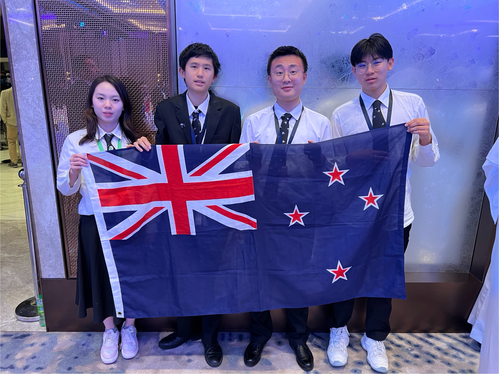

The International Chemistry Olympiad started in Eastern Europe in 1968 and has grown to about 75 countries with New Zealand first competing in 1992. The NZ Chemistry Olympiad is a charitable organization managed by a group of trustees and each year the program is run on a voluntary basis by a small group of dedicated secondary and tertiary teachers.
To be eligible, students must be under 20 and not intending to attend University in the year of the International Olympiad. Students must be a NZ Citizen or permanent resident at the time of accepting a place in the training group and must have attended school in NZ for two of the last 4 years prior to selection for the training group. Students must also be at least 15 years of age at the time of the camp.
The New Zealand program involves:
The International Chemistry Olympiad examinations are arduous and involve a 5 hour practical examination followed 2 days later by a 5 hour theoretical examination. These occupy only 2 days of the week the students spend at the Olympiad, the remainder of the time allowing the students to establish personal and friendly contacts with other like-minded secondary students from a diverse range of cultures. They also are able to get acquainted with various aspects of the life of the host people and country.
Why is the Chemistry Olympiad worthwhile?
The NZ Chemistry Olympiad was extremely proud of the outstanding achievement by the four students who represented NZ at the ICHO in Dubai, UAE (2025). The students Kelly Liu (Pinehurst School, Honourable Mention), Joseph Guo (Hamilton Boys High, Bronze), Alex Zhao (Westlake Boys High, Bronze) and Cael Sia (Rangitoto College, Bronze).

The 58th International Chemistry Olympiad (IChO) will be held in Uzbekistan (2026).
The 59th International Chemistry Olympiad (IChO) will be held in Chinese Taipei (2027).